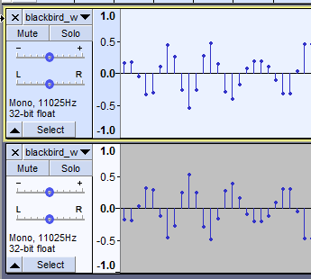
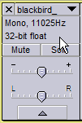
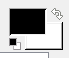

The RGB color model
Color is usually represented on a computer using the RGB color model.
A. Translate colors between colors and RGB codes. Remember that in 24 bit ("true") color, each channel is an 8 bit whole number, between 0 and 255, and interpreted as light intensity in that channel. So, for example, a value of 0,0,0 means no red, no green, and no blue light - no light of any kind gives us black. Maximum values of 255, 255, 255 means a maximum intensity of light of all three wavelengths, which gives us white.
Refer to this color picker to answer the questions on your worksheet. You can enter R, G, and B values to get the color.
Digitizing sound waves
E. Evaluate how many different levels of sound intensity would be possible at different bit depths. On your worksheet answer the questions about how bit depth affects fidelity of digital sound recordings.
File storage and lossy compression
Digital files can get really big, and although storage media capacities keep increasing we keep finding ways to fill them up. Finding ways to store information with fewer bits allows us to fit more data onto our hard drives, CD-ROM's, and flash drives.
When you are looking at pictures on a web page, or watching video, or listening to music, as long as everything looks and sounds okay to you there would be no reason to worry about whether the images or audio were exactly as they were recorded. If the recorded data had been changed in some way to save storage space, as long as the results didn't look or sound different it wouldn't matter.
When you ware doing scientific work, though, digital data in image, sound, or video files is used to measure the properties of a system being studied. A change in data that isn't intentional is a problem, and the fact that the change may not be noticeable to the researcher actually makes the problem worse, as the data may be used as though it's accurate when it isn't anymore.
Using lossy file formats is a way of corrupting your digital data unintentionally, and possibly without knowing that you did so. Today you will evaluate how use of lossy file formats can affect digital sound data and digital image data. In general, use of lossy file formats in scientific work is a bad idea, and should only be done when a researcher knows how the data will be altered, and is certain that the change will not affect his or her work.
Lossy compression of audio files
Lossy compression methods commonly used for sound files throw out sounds that aren't audible to the human ear. This is fine for audio recordings that are meant for entertainment, but if we are recording animal sounds to study how they communicate we have to be aware that animals can hear different ranges of sound than we can, and throwing out data because we can't hear it is problematic.
To see how lossy compression affects sound files, we are going to use a program called Audacity to analyze a recording of a European Blackbird. European Blackbirds are not closely related to blackbirds we have in North America, they are actually much more closely related to the American Robin. If you know birds, the picture of a European Blackbird to the left looks just like a black robin.
We are not going to spend a lot of time on analyzing the structure of Blackbird song today, but we will evaluate how use of a sound file format that uses lossy compression affects the data in a recording.
We will use a program called Audacity to assess the loss of data in sound files. We will start with a recording of a blackbird song in an uncompressed WAV file, export it to a lossy compression format (called Ogg Vorbis), and then compare the compressed file to the original.
1. Start Audacity from Cougar Apps. You can open a copy of the uncompressed WAV file by navigating to the "Computer" icon, and then to "Public on Viking (P:)" → "Biology" → "kristanw" → "Biol365" → "Ex2", and then open the file "blackbird_w.wav". You will get a warning message about importing uncompressed audio, with a suggestion to make a copy of the files before editing; say "OK" to this.
When it opens, the sound file is displayed as a waveform graph, which has time on the x-axis, and loudness (in decibels) on the y-axis. If you play the sound, you'll hear that the blackbird has a lilting, flute-like song that covers a wide range of different pitches - this will make it a good test case.
2. Before we try out some lossy compression, we will test the method we will use to compare the original sound file to the compressed one. We will make a copy of the original uncompressed WAV file, invert it, and then mix the original with the inverted copy. An example of a tiny clip from the sound file is shown to the left, with the original on top and the inverted original on the bottom - inverting the sound file flips the wave vertically around 0, so that positive values become negative, and negative become positive.
Mixing these two sound waves together means to add them, and if two waves are exact inverses of one another they will cancel each other out. The result will be a flat line at 0, which is silence.
First we'll make an exact copy of the song by selecting "Edit" → "Duplicate" - you will now see a second copy of the original in a second "track". below the first.
Next, select just the duplicate track by clicking into the box at the left of the second track, like so . Don't click on any of the buttons or settings, just click into the area that says "Mono, 11025Hz" and "32-bit float". When a track is selected it darkens, so the second track should be darker than the first.
Now, select "Effect" → "Invert". If you watch the waveform graph as you invert it you'll see a subtle change in the wave form, but otherwise you probably won't be able to tell that it's different. Don't worry if you don't see the change - you can double-check that it happened by checking the "Edit" menu, and if it gives you the option to undo the invert then you're good to go.
To mix the tracks together both have to be selected, so hold down the SHIFT key while you select the original track. At this point both tracks should be darkened. Select "Tracks" → "Mix and render to new track". The two tracks will be combined into one, and you'll see a flat line. If you select this new mixed track and play it you won't hear anything. This is what happens when two tracks are identical.
Before you move on to the next step you can close the second, duplicate track by clicking the little x next to the name of the track in the properties box on the left side of the track (next to "blackbird_" in the screen shot above), and do the same for the mixed flat line track.
3. Now select "File" → "Export Audio". In the "Export Audio" window that pops up:
- Navigate to your H: drive, and select "Ogg Vorbis Files" as the "Save as type:".
- Leave the quality at 5. The quality setting is a trade-off between file size (smaller with lower quality setting) and degree of change to the sound data (more change with lower quality). We'll see how accepting the default setting works out.
- Change the file name to "lossy_blackbird_w.ogg" and save.
You may not have heard of Ogg Vorbis before - it is a lossy sound file format intended for the same uses as mp3 files, primarily for sound files meant for human ears. We would have used mp3 since it is so common, but there is a bug in the mp3 encoder used by Audacity that inserts a few milliseconds of silence at the beginning of each file, and this causes the sound waves to mis-align when we try to compare them. However, any lossy sound file format, including mp3, would change the sound data and give us similar results to what we will get with Ogg Vorbis.
4. Import the lossy version of the file as a second track. Select "File" → "Import" → "Audio", and go find the Ogg Vorbis file you just exported, select it, and import it.
Audacity will make a new track for this file. The wave forms don't obviously look different, and if you select the lossy one and play it you won't be notice any obvious differences.
5. Now, to compare the two waves:
- Select the lossy track, and invert it.
- Select both tracks, and mix and render them to a new track.
You should now have a mixed track that isn't a flat line. Anywhere that isn't flat is a part of the recording in which saving to a lossy format changed the data.
If you try to play the mixed track you may not hear much, it's a fairly subtle amount of difference. But, it's not zero difference, and for scientific work it is a bad idea to allow a choice of file format to change your data.
Lossy and lossless compression - images
Some image file formats are uncompressed (e.g. TIFF), but there are also lossless (e.g. PNG), and lossy compression (e.g. JPEG) formats to choose from.
Just like with sound file compression, lossy compression of images discards image data strategically, so that the image still looks okay when viewed at its intended magnification. However, when images are being used as a data collection method, these changes in the image corrupt the data.
We need to use an image editing program for this, so we will use the Gnu Image Manipulation Program (GIMP). The GIMP is an open source program that is similar to PhotoShop.
1. Start the GIMP from Cougar Apps, and open the original TIFF file on the P: drive. You will find it in the same folder as the blackbird song - it's called csusm.tif.
When you open it you'll see it's a high resolution aerial photo of part of the CSUSM campus taken in 2012 (before the USU was built, although you can see that construction had started).
2. Hold down the SHIFT key and hit + to zoom in. When you've zoomed in far enough to see individual pixels stop. This image has a resolution if 0.6 feet, so each pixel is equivalent to 0.36 square feet on the ground.
Select "Windows" → "Dockable Dialogs" → "Pointer" to bring up the pointer window. With the pointer window visible, move your pointer around the image and you'll see that the Red, Green, and Blue values change as you move from pixel to pixel. Even though some pixels are pretty similar in color, you will have a hard time finding RGB values that are identical for adjacent pixels.
You can zoom back out so that you can see the whole scene now by hitting the "-" key (to the left of +).
3. Now it's time to export the file as a lossy file format, jpeg. We're going to use jpeg because it is so common, to the point that many digital cameras use it as their native format. The amount of compression is configurable as a "quality" setting - higher quality means less compression, and if a quality setting of 100% is used then only lossless compression is used. However, even digital cameras will typically use a quality setting less than 100% by default, and some degree of lossy compression is typically used when the image is originally acquired.
Choose "File" → "Export as", and in the "Export Image" window give the file the name "csusm.jpg" and save it to your H: drive. Using the jpg extension will cause the GIMP to export as a jpeg file. We will accept the default of 90%, so don't change this setting.
When you click "Export" an "Export image as JPEG" window will pop up so that you can set the quality. The default is 90%, which is considered very high (70% is considered high quality for images used on web pages). Click "Export".
4. Import the jpeg file as a layer by selecting "File" → "Open as layers". Navigate to the csusm.jpg, select and open it.
This will add csusm.jpg as a second layer in the same image as csusm.tif, rather than opening the jpeg file as a separate image. If you look at the "Layers-Brushes" window you'll see that you now have a layer for csusm.jpg above the original csusm.tif layer.
You can turn the csusm.jpg layer on and off by clicking on the eye icon, but you probably won't notice big differences unless you zoom in to pixel level, and even at a very high magnification the differences are very slight.
But there are in fact small differences throughout the image. We will confirm that in the next step.
5. To do the comparison of csusm.tif and csusm.jpg we will take advantage of a built-in function that is used to make animations from multiple images. Animations and video take up a lot of file space because they use multiple images that are played in quick succession to give the illusion of movement. If each frame in the animation is a complete, separate image, then the animation file size will be the size of a single frame multiplied by the number of frames. Animations and video files get big quickly if they are not compressed.
However, it is often the case that different frames in an animation have a lot of pixels that are identical, and only a few pixels that change between frames. If the animation file contains a full image for the first frame, and then saves only the differences between the first frame and the frames that follow, pixels that don't change only have to be saved once, which can save a lot of space. We will use a tool that makes these differenced images for the purposes of making animations, so that we can see where the differences lie between the tif and jpeg layers.
Select "Filters" → "Animation" → "Optimize (difference)". This will make a new image in a new window with two layers, the first being a complete copy of the original lossless tif image, and the second being pixels in the jpeg that are different from the original tif. Pixels that are the same between the tif and jpeg images are transparent in the second layer, so turning the original on and off by clicking the eye icon next to csusm.tif(100ms) will show where the differences are - any pixel that isn't transparent is different between the tif and jpeg layers.
You can make the differences even clearer by:
- In the "Toolbox - Tool Options" window click on the black box, , and set the foreground color to a nice bright red.
- In the "Layers" window, right-click to get a context menu, and then select "New layer" to create a new, blank layer. In the "New Layer" settings window that pops up, set "Layer Fill Type" to "Foreground color" (which you just set to red), and click "OK"
- The new layer is on top, and is blocking the other layers in the image - drag the new layer below csusm.tif(100ms)
Now when you turn csusm.tif(100ms) off you will see red through the transparent pixels - red pixels are those that did not change when you saved the original tif image as a jpeg with 90% quality. Any pixel that is not red is at least a little different from the tif image.
Since most of the image isn't red, there were at least small changes to most of the pixels in the image when it was saved as a jpeg. The differences are mostly very slight, but just like with the audio file, we wouldn't want choice of file format to change our data at all, so non-zero changes are a problem.
In general, the best way to avoid corruption to your digital data is to use either uncompressed file formats, or file formats that use lossless compression.
That's it! Upload your completed Excel file to the course web site, and complete your worksheet to turn in next week.